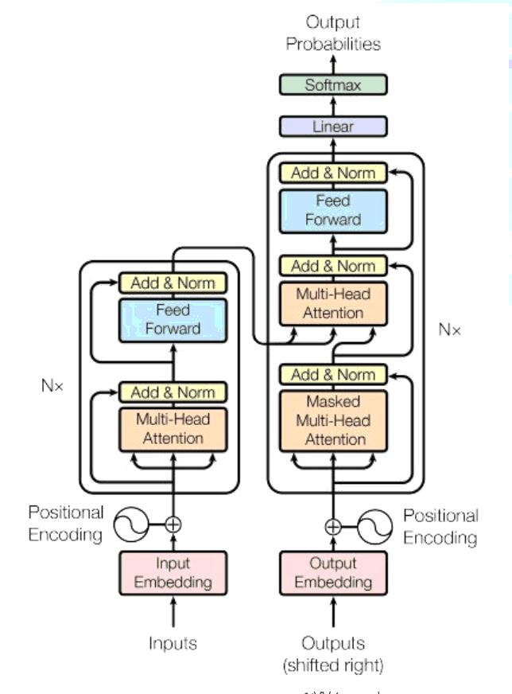

Vaswani i in., 2017
Query
, czego szuka bieżący token
Key
, co oferuje każdy z pozostałych tokenów
Value
, treść, którą token przekazuje dalej
Dopasowanie
każdego tokenu do każdego innego
Skalowanie
wymiarem klucza, żeby softmax się nie nasycał
